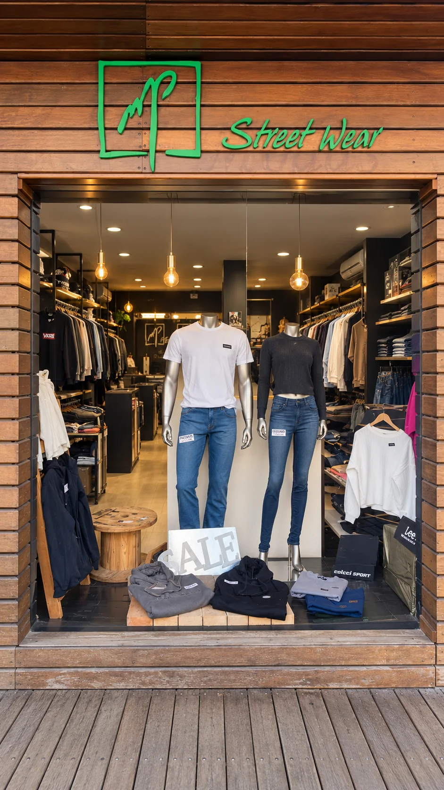
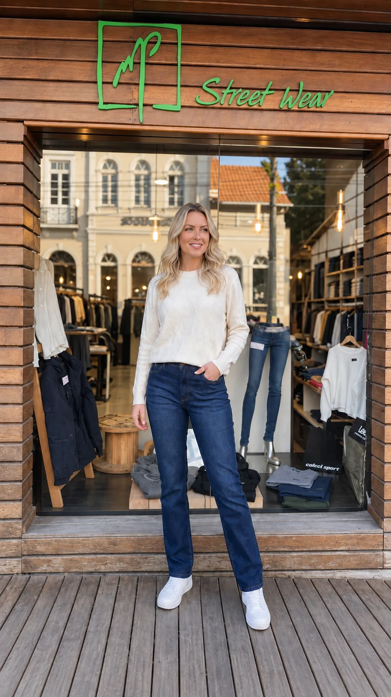
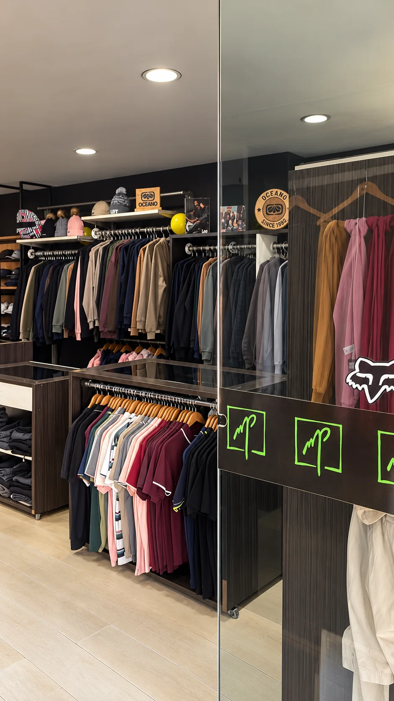
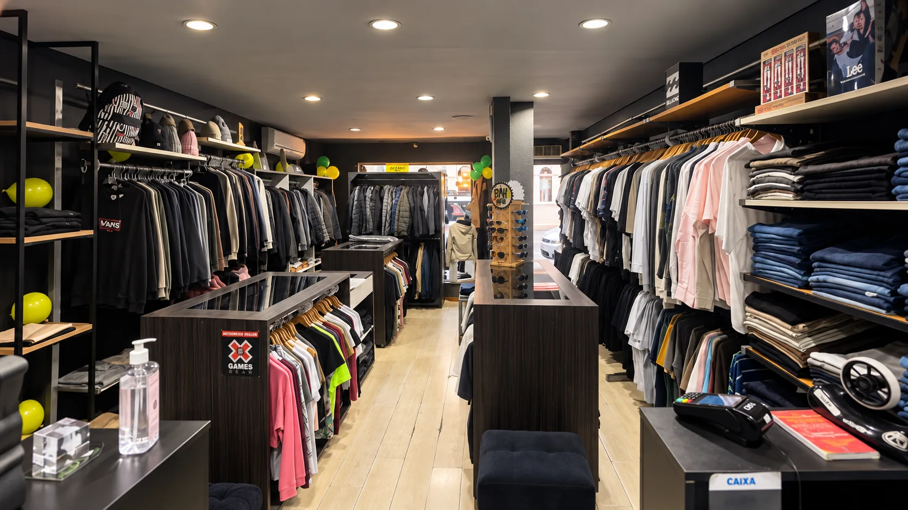
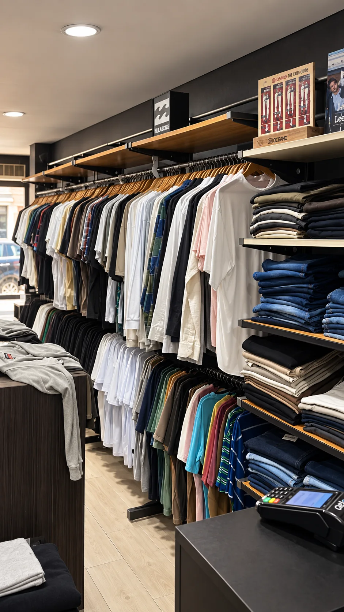
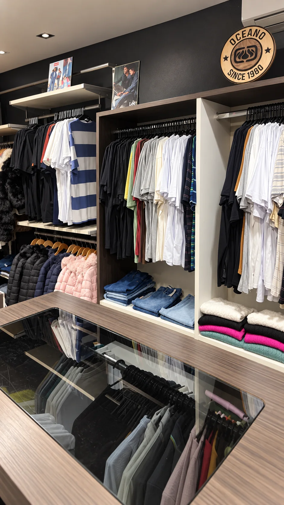

A LOJA
Rua, estilo e identidade desde 2007.
Uma história construída com boas marcas, atendimento de verdade e uma seleção feita para quem valoriza personalidade.
Conhecer a MP

DESDE 2007
Uma história feita de estilo e proximidade.
A MP Concept faz parte da cena de São Bento do Sul há anos, reunindo marcas reconhecidas, moda masculina e feminina e um atendimento próximo de quem conhece a loja e seus clientes.
ATENDIMENTO MP
Aqui, vender começa por entender.
Cada cliente chega com um estilo, uma rotina e uma ideia diferente. A MP aproxima produto e pessoa com atendimento direto, próximo e sem complicação.

POR DENTRO DA MP
Grandes marcas. Escolhas com identidade.
Um espaço pensado para reunir variedade, qualidade e estilo em uma experiência próxima e direta.

- Marcas selecionadas
- Moda masculina e feminina
- Atendimento próximo


VISITE A MP
A experiência começa na loja.
São Bento do Sul - SC
89280-172
Segunda a sexta
09:30 às 12:00
13:00 às 18:20
Sábado
09:00 às 12:20